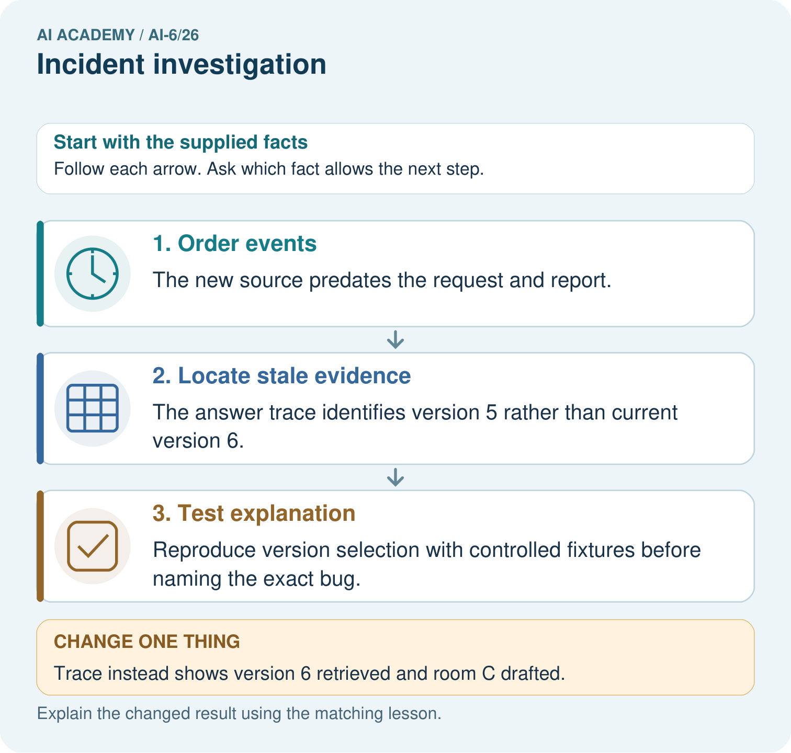
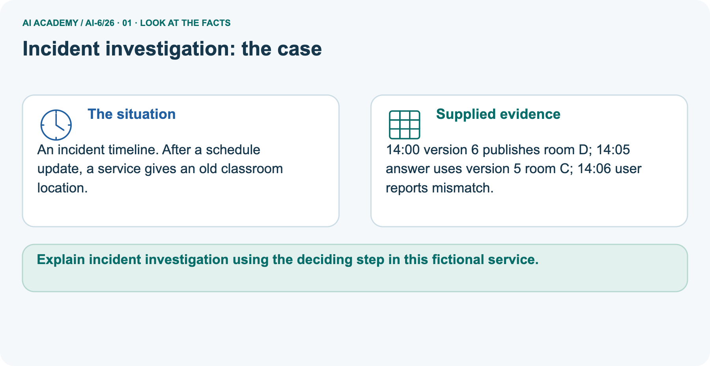
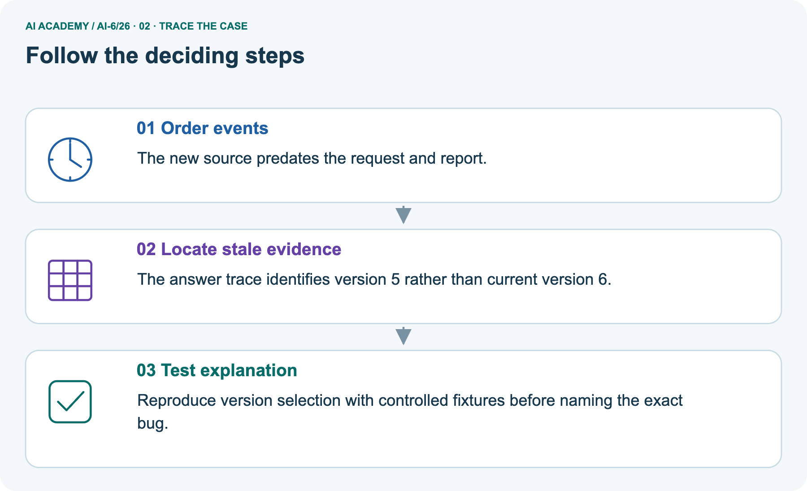
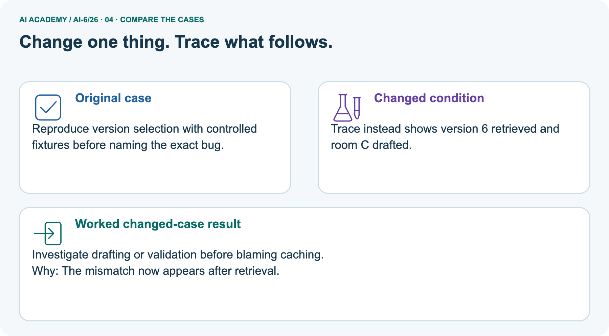
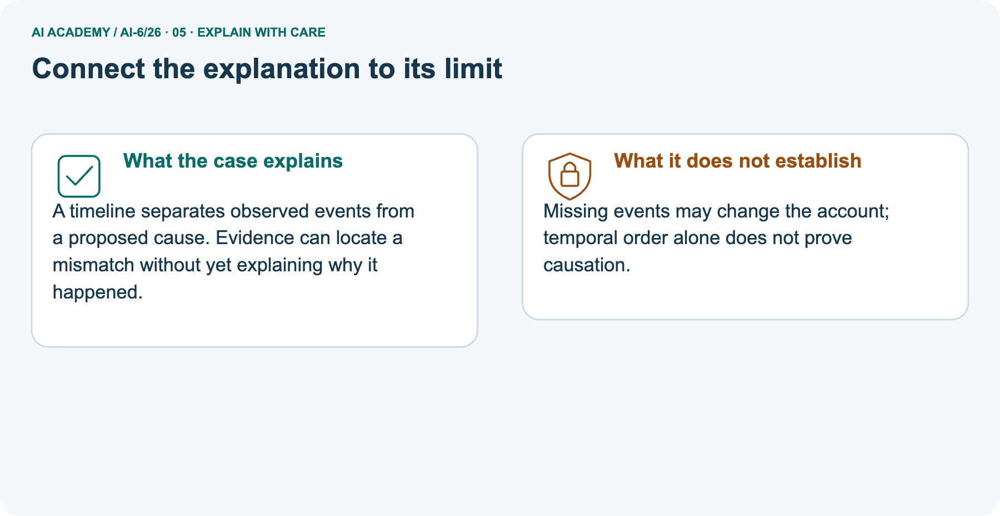
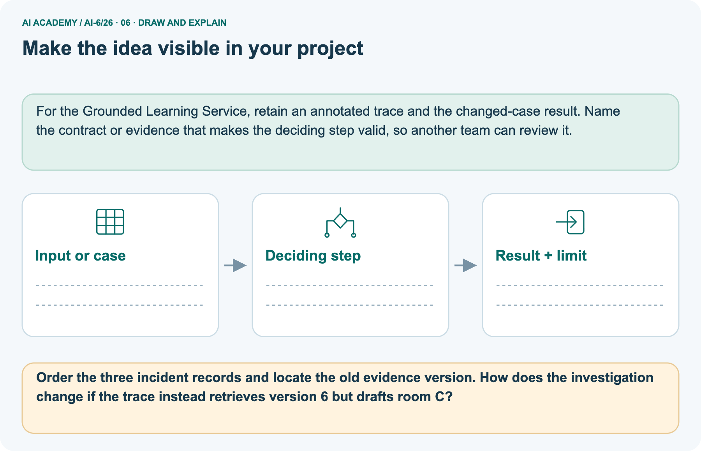

AI Academy · Level 6 · Grade 11 · Week 26 · Workbook
Incident investigation
Learn to understand, design, build, test and explain AI systems responsibly.
Project: Grounded Learning Service
THE CONNECTED WEEK
One complete incident evidence and hypothesis record.
Keep permitted timeline, versions, containment, candidate explanation, test conditions and unresolved evidence together.
Keep one habit: Recall → W1–W3/W5 → independent permission incident → investigation project → delayed return.
Main lesson · Section 1
Recall · Retrieve before notes
Keep this task’s inputs,rule and response together.
Complete task and evidence
Try the recall before opening notes. Then use a different colour or a labelled second line to correct your explanation.
Without opening the old lesson, explain one key idea from Monitoring quality drift. Give an example and a mistake that the idea helps you avoid.
Without opening the old lesson, explain one key idea from Deployment environments. Give an example and a mistake that the idea helps you avoid.
Without opening the old lesson, explain one key idea from Data retention and deletion. Give an example and a mistake that the idea helps you avoid.
Use this reference for the original W1–W3 and W5 exercises. The separately named independent case supplies its own changed facts; use those facts for that attempt before feedback.
Incident investigation preserves a timeline and distinguishes observation from hypothesis. Repair before evidence collection can erase clues.
Record timestamps, versions, requests, authorised actions and outcomes with minimised logs. Separate immediate containment from diagnosis. Compare candidate explanations against evidence.
Monitoring quality drift
Deployment environments
Data retention and deletion
Lesson reference for workbook practice
Main lesson · Section 5
W1 · Explain the current example
Keep this task’s inputs,rule and response together.
Complete task and evidence
Incident investigation records observed times, versions, requests, authorized actions and outcomes using minimized permitted evidence. Separate observations from hypotheses, and immediate containment from diagnosis. Main supplied timeline: corpus c2 publishes at 09:00; response uses stale c1 at 09:05; cache disabled at 09:06.
Trusted declared weight version remains w7, contradicting the reported weight-version change under that metadata assumption. Stale cache is a candidate, not a proven exact cause. A controlled local deliberately buggy query-only cache gives c1 when enabled and c2 when bypassed; other fixtures stay fixed. This is a possible mechanism demonstration, not a live reproduction.
Separate picture: 14:00 version 6 room D; 14:05 version 5 room C used; 14:06 mismatch report. Changed trace retrieves version 6 but drafts room C, so inspect handoff, answer construction and checks instead of assuming old-source retrieval. Missing events may change conclusions; temporal order alone proves no cause. Contain promptly while authorized minimized evidence is captured where feasible.
No private payloads, real logs, live model runs or service changes occur in the code.
Explain the weekly mechanism in your own words. Use the worked scenario to name its input, decision rule and output.
Main lesson · Section 6
W2 · Trace the calculation
Keep this task’s inputs,rule and response together.
Complete task and evidence
Incident investigation records observed times, versions, requests, authorized actions and outcomes using minimized permitted evidence. Separate observations from hypotheses, and immediate containment from diagnosis. Main supplied timeline: corpus c2 publishes at 09:00; response uses stale c1 at 09:05; cache disabled at 09:06.
Trusted declared weight version remains w7, contradicting the reported weight-version change under that metadata assumption. Stale cache is a candidate, not a proven exact cause. A controlled local deliberately buggy query-only cache gives c1 when enabled and c2 when bypassed; other fixtures stay fixed. This is a possible mechanism demonstration, not a live reproduction.
Separate picture: 14:00 version 6 room D; 14:05 version 5 room C used; 14:06 mismatch report. Changed trace retrieves version 6 but drafts room C, so inspect handoff, answer construction and checks instead of assuming old-source retrieval. Missing events may change conclusions; temporal order alone proves no cause. Contain promptly while authorized minimized evidence is captured where feasible.
No private payloads, real logs, live model runs or service changes occur in the code.
At 09:00 corpus updates; 09:05 stale cache response; 09:06 cache disabled. Team says model weights changed, but weight version is unchanged. Show the intermediate steps and give the conclusion with its scope.
Main lesson · Section 7
W3 · Repair a misconception
Keep this task’s inputs,rule and response together.
Complete task and evidence
Incident investigation records observed times, versions, requests, authorized actions and outcomes using minimized permitted evidence. Separate observations from hypotheses, and immediate containment from diagnosis. Main supplied timeline: corpus c2 publishes at 09:00; response uses stale c1 at 09:05; cache disabled at 09:06.
Trusted declared weight version remains w7, contradicting the reported weight-version change under that metadata assumption. Stale cache is a candidate, not a proven exact cause. A controlled local deliberately buggy query-only cache gives c1 when enabled and c2 when bypassed; other fixtures stay fixed. This is a possible mechanism demonstration, not a live reproduction.
Separate picture: 14:00 version 6 room D; 14:05 version 5 room C used; 14:06 mismatch report. Changed trace retrieves version 6 but drafts room C, so inspect handoff, answer construction and checks instead of assuming old-source retrieval. Missing events may change conclusions; temporal order alone proves no cause. Contain promptly while authorized minimized evidence is captured where feasible.
No private payloads, real logs, live model runs or service changes occur in the code.
A report omits this qualification: A plausible narrative needs controlled or record-based confirmation and must preserve unknowns.
Explain how omitting it could change a reader's interpretation, and write an accurate replacement.
Main lesson · Section 9
W5 · Explain the limitation
Keep this task’s inputs,rule and response together.
Complete task and evidence
Incident investigation records observed times, versions, requests, authorized actions and outcomes using minimized permitted evidence. Separate observations from hypotheses, and immediate containment from diagnosis. Main supplied timeline: corpus c2 publishes at 09:00; response uses stale c1 at 09:05; cache disabled at 09:06.
Trusted declared weight version remains w7, contradicting the reported weight-version change under that metadata assumption. Stale cache is a candidate, not a proven exact cause. A controlled local deliberately buggy query-only cache gives c1 when enabled and c2 when bypassed; other fixtures stay fixed. This is a possible mechanism demonstration, not a live reproduction.
Separate picture: 14:00 version 6 room D; 14:05 version 5 room C used; 14:06 mismatch report. Changed trace retrieves version 6 but drafts room C, so inspect handoff, answer construction and checks instead of assuming old-source retrieval. Missing events may change conclusions; temporal order alone proves no cause. Contain promptly while authorized minimized evidence is captured where feasible.
No private payloads, real logs, live model runs or service changes occur in the code.
For the worked scenario, propose one additional case that could reveal a failure, describe its expected outcome before running it, and explain what would need to remain fixed for a fair comparison.
Do not reuse W4 as a new final test after receiving feedback.
Main lesson · Section 4
Try alone · Selected transfer
Keep this task’s inputs,rule and response together.
Complete task and evidence
10:00 permissions config changes; 10:03 restricted read; model version unchanged. Name a plausible cause and one test.
Attempt this case before feedback. Record any help. Earlier examples below are further practice; a case already practised with feedback cannot establish fresh transfer.
Independent case: Apply a new case independently
Main lesson · Section 10
Project · Keep the service evidence
Preserve the contract, inputs, observed outcomes and limits.
Complete task and evidence
Add a labelled incident investigation evidence sheet to Grounded Learning Service. Show how you can explain the mechanism and terminology of incident investigation.
Use the supplied fictional case and keep its inputs, intermediate steps, calculation or prediction, and limitation. Connect this record to last week’s record; a matching answer without a trace is insufficient.
Main lesson · Section 11
Feedback · Repair and return
Keep this task’s inputs,rule and response together.
Complete task and evidence
Revisit this idea with your teacher after a delay. Familiarity is different from explaining and using it on a changed case.
| Evidence | My record |
|---|---|
| Worked alone / hint / model | |
| First step I repaired and why | |
| New case checked later; date and result | |
| What I can now explain without notes | |
| One remaining question |
Reference bank and extra practice
Choose the reference that helps your next step.
Reference · Supported W2 record
Reference · Section 2
Reference · Supported W2 record
Keep this task’s inputs,rule and response together.
Complete task and evidence
Use W2: Trace the worked case for Incident investigation. Record the answer once; the lesson and workbook refer to the same attempt.
| Given inputs | Procedure I chose | Middle steps | Result and check |
|---|---|---|---|
Extra practice · Individual reasoning check
Reference · Section 3
Extra practice · Individual reasoning check
Keep this task’s inputs,rule and response together.
Complete task and evidence
Use the worked case for Incident investigation. Proposed explanation: “The worked result establishes every future case”. Decide whether this explanation is supported.
Point to the step or supplied fact that decides; explain your repair if needed.
Reference · Earlier W4 response copy
Reference · Section 8
Reference · Earlier W4 response copy
Keep this task’s inputs,rule and response together.
Complete task and evidence
10:00 permissions config changes; 10:03 restricted read; model version unchanged. Name a plausible cause and one test.
Extra practice · Pictured case
Reference · Section 12
Extra practice · Pictured case
Keep this task’s inputs,rule and response together.
Complete task and evidence
An incident timeline. After a schedule update, a service gives an old classroom location.
14:00 version 6 publishes room D; 14:05 answer uses version 5 room C; 14:06 user reports mismatch.
Order the three incident records and locate the old evidence version. How does the investigation change if the trace instead retrieves version 6 but drafts room C?
Support used: alone / hint / worked example. This record is practice evidence.
Project connection: For the Grounded Learning Service, retain an annotated trace and the changed-case result. Name the contract or evidence that makes the deciding step valid, so another team can review it.



Reference · Project milestone
Reference · Section 13
Reference · Project milestone
Keep this task’s inputs,rule and response together.
Complete task and evidence
Project: Grounded Learning Service
Current milestone: Prepare the demonstration. Gather reproducible instructions, evidence, access checks and remaining limitations.
For the Grounded Learning Service, retain an annotated trace and the changed-case result. Name the contract or evidence that makes the deciding step valid, so another team can review it.
| Evidence to keep | My record |
|---|---|
| This week’s input and deciding step | |
| Prediction and actual result (or labelled paper trace) | |
| One change since the previous checkpoint and why | |
| One error or limit and the next test |
Extra practice · Predict,check and repair
Reference · Section 14
Extra practice · Predict,check and repair
Keep supported feedback separate from the independent case.
First supported question and optional hint
An incident timeline. After a schedule update, a service gives an old classroom location.
Which labelled step matches this detail? Reproduce version selection with controlled fixtures before naming the exact bug.
1. Test explanation
2. Order events
3. Locate stale evidence
Hint if needed: Read the steps in the pictorial case. Match the supplied detail to the stage that performs or records it.
Practice 1: explain the deciding evidence
Check after the first attempt
After your attempt, compare with the supported explanation: Test explanation Reproduce version selection with controlled fixtures before naming the exact bug. A timeline separates observed events from a proposed cause.
Evidence can locate a mismatch without yet explaining why it happened.
Changed-case question and optional hint
Changed-case practice: Trace instead shows version 6 retrieved and room C drafted. Which conclusion is supported by the supplied facts?
1. This one example guarantees correct results for every future input.
2. Investigate drafting or validation before blaming caching.
3. We can decide the result without examining the changed input or the procedure.
Hint if needed: Use the changed condition and the deciding step in the pictorial trace. The answer must say what follows from those facts.
Practice 2: explain the deciding evidence
Check after the changed attempt
After your attempt, compare with the supported explanation: Investigate drafting or validation before blaming caching. The mismatch now appears after retrieval.
Repair and retain the record
Review Monitoring quality drift (ai-6/25). Goal: Explain the mechanism and terminology of monitoring quality drift. Short practice: Compute both clear and ambiguous slice rates for A and B.
Which slice weakens, and how should that slice be reported when no ambiguous questions are observed?. Return to this week and explain what you changed.
Review Deployment environments (ai-6/23). Goal: Explain the mechanism and terminology of deployment environments. Short practice: Identify the staging data and credential boundary.
Why must the rehearsal stop if its credential reaches production even though the process is labelled staging?. Return to this week and explain what you changed.
Review Data retention and deletion (ai-6/20). Goal: Explain the mechanism and terminology of data retention and deletion. Short practice: Apply the seven-day boundary to T1 and T2.
How many T2 locations need verification, and may deletion be called complete if its backup remains?. Return to this week and explain what you changed.
Use Download completed work in the hosted lesson to export your answers, reflections, practice feedback and code-run evidence. Open the HTML copy to read or print it.
Drafts stay in this browser when storage is available; clear drafts on a shared device.
Earlier wording, alternatives and picture transcripts
Use this supported practice once, in the browser or on paper. Keep the reserved independent assessment for a separate first attempt before teacher feedback.
Repair a missing building block
Keep your completed work
Reference · Six-picture response sheets
Reference · Section 15
Reference · Six-picture response sheets
Choose the picture that helps explain the current step.
01. Incident investigation: the case



An incident timeline. After a schedule update, a service gives an old classroom location. Supplied facts: 14:00 version 6 publishes room D; 14:05 answer uses version 5 room C; 14:06 user reports mismatch.
Point to the given fact that matters most. Explain why it matters.
02. Follow the deciding steps



Order events: The new source predates the request and report. → Locate stale evidence: The answer trace identifies version 5 rather than current version 6. → Test explanation: Reproduce version selection with controlled fixtures before naming the exact bug.
Point to each numbered stage and explain which recorded input it uses.
03. Incident investigation — evidence trace
![Incident investigation — evidence trace. At 09:00 corpus updates; 09:05 stale cache response; 09:06 cache disabled. Team says model weights changed, but weight version is unchanged. | Record timestamps, versions, requests, authorised actions and outcomes with minimised logs. Separate immediate containment from diagnosis. Compare candidate explanations against evidence. | Weight-change claim is contradicted by the version record. Stale cache is a supported candidate explanation; preserve timeline and test it with controlled reproduction.](../assets/academy-story-ai-6-26-03.png)

Incident investigation — evidence trace. At 09:00 corpus updates; 09:05 stale cache response; 09:06 cache disabled. Team says model weights changed, but weight version is unchanged. | Record timestamps, versions, requests, authorised actions and outcomes with minimised logs. Separate immediate containment from diagnosis. Compare candidate explanations against evidence. | Weight-change claim is contradicted by the version record. Stale cache is a supported candidate explanation; preserve timeline and test it with controlled reproduction.
Read the labels and values. Explain the relationship the model shows.
04. Change one thing. Trace what follows.



Original case: Reproduce version selection with controlled fixtures before naming the exact bug. Changed condition: Trace instead shows version 6 retrieved and room C drafted.
Expected result: Investigate drafting or validation before blaming caching. Reason: The mismatch now appears after retrieval.
Predict before checking the worked changed-case result. Name what changed and what the supplied facts allow you to conclude.
05. Connect the explanation to its limit



A timeline separates observed events from a proposed cause. Evidence can locate a mismatch without yet explaining why it happened. Limit: Missing events may change the account; temporal order alone does not prove causation.
Explain the case, then point to a limit on the claim.
06. Make the idea visible in your project



For the Grounded Learning Service, retain an annotated trace and the changed-case result. Name the contract or evidence that makes the deciding step valid, so another team can review it.
Draw your input, deciding step, result and limit. Supported question: Order the three incident records and locate the old evidence version.
How does the investigation change if the trace instead retrieves version 6 but drafts room C?
Draw your project trace and justify the deciding step using evidence.